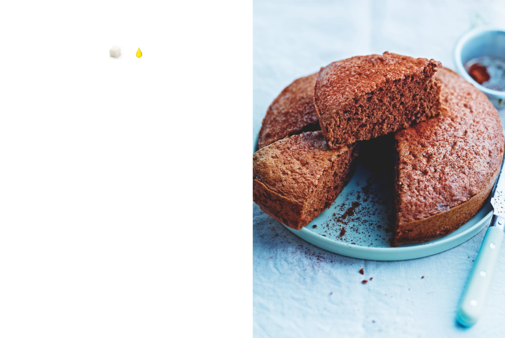

Génoise au cacao
APPORTS NUTRITIONNELS PAR PERSONNE
8
0,5
carrés
carré
de sucre
de graisse
PRÉPARATION : 30 minutes / CUISSON : 20 à 25 minutes
Ingrédients pour 6 personnes
1.
Commencez par préparer le moule à manqué : faites fondre
les 20 g de beurre et badigeonnez-en soigneusement tout l’intérieur
20 g de beurre pour le moule
du moule au pinceau. Passez le moule 10 minutes au réfrigérateur
4 œufs
pour figer le beurre, puis farinez-le : saupoudrez-le de farine,
120 g de sucre
faites-le tourner pour répartir la farine, puis retournez-le pour
120 g de farine + 30 g pour le moule
éliminer l’excédent. Remettez le moule au frais.
20 g de poudre de cacao
2.
Préchauffez le four à 180 °C (th. 6).
3.
Dans un cul-de-poule ou un saladier posé sur une casserole
d’eau frémissante (le fond du récipient ne doit pas toucher l’eau),
fouettez les œufs et le sucre à l’aide d’un fouet électrique jusqu’à
ce qu’ils soient légers et mousseux. Quand la température du
mélange atteint les 40 °C (testez avec votre doigt : la mousse doit
être chaude mais non brûlante), retirez le bol de la casserole et
continuez de battre jusqu’au complet refroidissement du mélange.
Bien entendu, un batteur électrique à bol chauffant est idéal pour
l’ensemble de cette opération.
L’ASTUCE DE CHEF
Si vous étalez cette pâte sur une grande plaque
garnie de papier sulfurisé beurré au pinceau,
4.
Tamisez la farine et le cacao sur ce mélange tout en
vous obtiendrez de quoi faire un gâteau roulé :
le tournant délicatement avec une spatule en caoutchouc.
garnissez-le de compote de framboises ou
Mélangez intimement mais sans insister. Versez la pâte dans
de chocolat fondu. La cuisson sur plaque est
le moule et faites cuire de 20 à 25 minutes au four. Testez la cuisson
alors de 10 à 15 minutes. Laissez refroidir
à l’aide d’une fine lame de couteau plongée au cœur du gâteau :
dans la plaque puis roulez le gâteau
en décollant le papier au fur et à mesure.
elle doit ressortir sèche.
La pâte à génoise est une pâte très aérienne
et légère, parfaite pour combler l’envie
de gâteau sans les inconvénients diététiques.
5.
Démoulez le gâteau sur une grille et laissez-le refroidir.
60
Au chocolat !